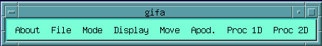
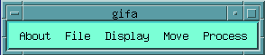

The basic-menu graphic user interface is installed in the standard start-up procedure. It is installed whenever the startup.g macro is executed. This macro loads the basic environment, and the 1D and 2D processing menus.

The
standard menu
An alternate, simplified menu set-up is available, which permits to ease the very first steps in the software. To switch to this simplified setup use the command available in the About Menu.

The
simplified menu
Note that the menu environment is completely optional, and Gifa can work without any menu bar (even without any graphic window !), or with a completely different graphic environment.
The environment macros are
found in the /usr/local/gifa/macro directory. Some macros need
additional files for interactive processing or for texts, these files
are held into the /usr/local/gifa/macro/gm directory.
There are
also sets of related macros, which are put together in sub
directories of the main macro directory, for instance 3d processing,
assignment, etc...